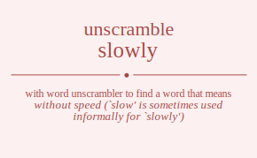

The word found after unscrambling slowly means that without speed (`slow' is sometimes used informally for `slowly'), in music, .

The word found after unscrambling slowly means that without speed (`slow' is sometimes used informally for `slowly'), in music, .
You can also find solutions for different combinations of letters in slowly like slowly slowyl slolwy slolyw sloywl sloylw slwoly slwoyl slwloy slwlyo slwyol slwylo sllowy slloyw sllwoy sllwyo sllyow sllywo slyowl slyolw slywol slywlo slylow slylwo solwly solwyl sollwy sollyw solywl solylw sowlly sowlyl sowlly sowlyl sowyll sowyll sollwy sollyw solwly solwyl solylw solywl soylwl soyllw soywll soywll soyllw soylwl swloly swloyl swlloy swllyo swlyol swlylo swolly swolyl swolly swolyl swoyll swoyll swlloy swllyo swloly swloyl swlylo swlyol swylol swyllo swyoll swyoll swyllo swylol sllowy slloyw sllwoy sllwyo sllyow sllywo slolwy slolyw slowly slowyl sloylw sloywl slwloy slwlyo slwoly slwoyl slwylo slwyol slylow slylwo slyolw slyowl slywlo slywol sylowl sylolw sylwol sylwlo syllow syllwo syolwl syollw syowll syowll syollw syolwl sywlol sywllo sywoll sywoll sywllo sywlol syllow syllwo sylolw sylowl sylwlo sylwol lsowly lsowyl lsolwy lsolyw lsoywl lsoylw lswoly lswoyl lswloy lswlyo lswyol lswylo lslowy lsloyw lslwoy lslwyo lslyow lslywo lsyowl lsyolw lsywol lsywlo lsylow lsylwo loswly loswyl loslwy loslyw losywl losylw lowsly lowsyl lowlsy lowlys lowysl lowyls lolswy lolsyw lolwsy lolwys lolysw lolyws loyswl loyslw loywsl loywls loylsw loylws lwsoly lwsoyl lwsloy lwslyo lwsyol lwsylo lwosly lwosyl lwolsy lwolys lwoysl lwoyls lwlsoy lwlsyo lwlosy lwloys lwlyso lwlyos lwysol lwyslo lwyosl lwyols lwylso lwylos llsowy llsoyw llswoy llswyo llsyow llsywo lloswy llosyw llowsy llowys lloysw lloyws llwsoy llwsyo llwosy llwoys llwyso llwyos llysow llyswo llyosw llyows llywso llywos lysowl lysolw lyswol lyswlo lyslow lyslwo lyoswl lyoslw lyowsl lyowls lyolsw lyolws lywsol lywslo lywosl lywols lywlso lywlos lylsow lylswo lylosw lylows lylwso lylwos oslwly oslwyl osllwy osllyw oslywl oslylw oswlly oswlyl oswlly oswlyl oswyll oswyll osllwy osllyw oslwly oslwyl oslylw oslywl osylwl osyllw osywll osywll osyllw osylwl olswly olswyl olslwy olslyw olsywl olsylw olwsly olwsyl olwlsy olwlys olwysl olwyls ollswy ollsyw ollwsy ollwys ollysw ollyws olyswl olyslw olywsl olywls olylsw olylws owslly owslyl owslly owslyl owsyll owsyll owlsly owlsyl owllsy owllys owlysl owlyls owlsly owlsyl owllsy owllys owlysl owlyls owysll owysll owylsl owylls owylsl owylls olslwy olslyw olswly olswyl olsylw olsywl ollswy ollsyw ollwsy ollwys ollysw ollyws olwsly olwsyl olwlsy olwlys olwysl olwyls olyslw olyswl olylsw olylws olywsl olywls oyslwl oysllw oyswll oyswll oysllw oyslwl oylswl oylslw oylwsl oylwls oyllsw oyllws oywsll oywsll oywlsl oywlls oywlsl oywlls oylslw oylswl oyllsw oyllws oylwsl oylwls wsloly wsloyl wslloy wsllyo wslyol wslylo wsolly wsolyl wsolly wsolyl wsoyll wsoyll wslloy wsllyo wsloly wsloyl wslylo wslyol wsylol wsyllo wsyoll wsyoll wsyllo wsylol wlsoly wlsoyl wlsloy wlslyo wlsyol wlsylo wlosly wlosyl wlolsy wlolys wloysl wloyls wllsoy wllsyo wllosy wlloys wllyso wllyos wlysol wlyslo wlyosl wlyols wlylso wlylos woslly woslyl woslly woslyl wosyll wosyll wolsly wolsyl wollsy wollys wolysl wolyls wolsly wolsyl wollsy wollys wolysl wolyls woysll woysll woylsl woylls woylsl woylls wlsloy wlslyo wlsoly wlsoyl wlsylo wlsyol wllsoy wllsyo wllosy wlloys wllyso wllyos wlosly wlosyl wlolsy wlolys wloysl wloyls wlyslo wlysol wlylso wlylos wlyosl wlyols wyslol wysllo wysoll wysoll wysllo wyslol wylsol wylslo wylosl wylols wyllso wyllos wyosll wyosll wyolsl wyolls wyolsl wyolls wylslo wylsol wyllso wyllos wylosl wylols lslowy lsloyw lslwoy lslwyo lslyow lslywo lsolwy lsolyw lsowly lsowyl lsoylw lsoywl lswloy lswlyo lswoly lswoyl lswylo lswyol lsylow lsylwo lsyolw lsyowl lsywlo lsywol llsowy llsoyw llswoy llswyo llsyow llsywo lloswy llosyw llowsy llowys lloysw lloyws llwsoy llwsyo llwosy llwoys llwyso llwyos llysow llyswo llyosw llyows llywso llywos loslwy loslyw loswly loswyl losylw losywl lolswy lolsyw lolwsy lolwys lolysw lolyws lowsly lowsyl lowlsy lowlys lowysl lowyls loyslw loyswl loylsw loylws loywsl loywls lwsloy lwslyo lwsoly lwsoyl lwsylo lwsyol lwlsoy lwlsyo lwlosy lwloys lwlyso lwlyos lwosly lwosyl lwolsy lwolys lwoysl lwoyls lwyslo lwysol lwylso lwylos lwyosl lwyols lyslow lyslwo lysolw lysowl lyswlo lyswol lylsow lylswo lylosw lylows lylwso lylwos lyoslw lyoswl lyolsw lyolws lyowsl lyowls lywslo lywsol lywlso lywlos lywosl lywols yslowl yslolw yslwol yslwlo ysllow ysllwo ysolwl ysollw ysowll ysowll ysollw ysolwl yswlol yswllo yswoll yswoll yswllo yswlol ysllow ysllwo yslolw yslowl yslwlo yslwol ylsowl ylsolw ylswol ylswlo ylslow ylslwo yloswl yloslw ylowsl ylowls ylolsw ylolws ylwsol ylwslo ylwosl ylwols ylwlso ylwlos yllsow yllswo yllosw yllows yllwso yllwos yoslwl yosllw yoswll yoswll yosllw yoslwl yolswl yolslw yolwsl yolwls yollsw yollws yowsll yowsll yowlsl yowlls yowlsl yowlls yolslw yolswl yollsw yollws yolwsl yolwls ywslol ywsllo ywsoll ywsoll ywsllo ywslol ywlsol ywlslo ywlosl ywlols ywllso ywllos ywosll ywosll ywolsl ywolls ywolsl ywolls ywlslo ywlsol ywllso ywllos ywlosl ywlols ylslow ylslwo ylsolw ylsowl ylswlo ylswol yllsow yllswo yllosw yllows yllwso yllwos yloslw yloswl ylolsw ylolws ylowsl ylowls ylwslo ylwsol ylwlso ylwlos ylwosl ylwols.
Unscramble Words is registered trademark.